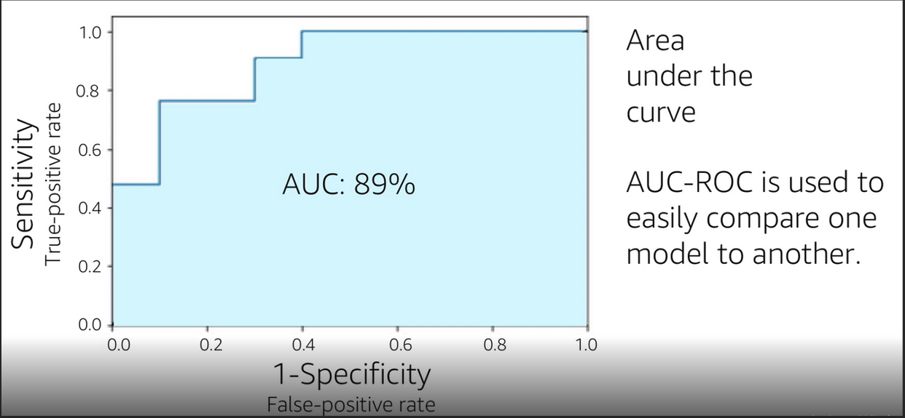
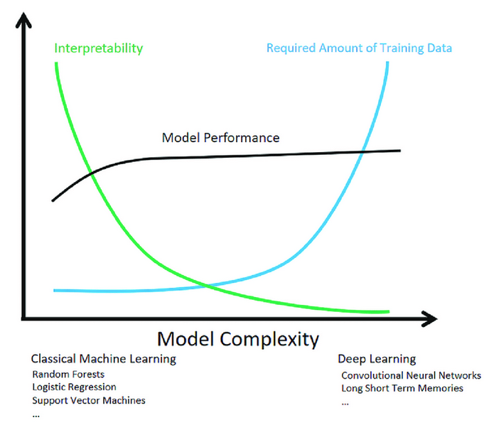
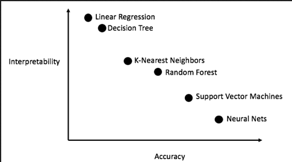

Tabular Data - Concepts in Machine Learning - Supervised Learning: Classification
Supervised classification concepts, from the confusion matrix and metrics like precision, recall, F1 and ROC AUC to choosing an error metric, with KNN and other classifiers.
Table of Content
One-vs-All technique
One technique to accomplish multi class classification is One-vs-All, with One-vs-All we would take one class, and declared that all else is going to be our other class and apply Logistic Regression, and we do so for the rest of the classes.
We'll end up with Logistic models splitting out (say 3 classes) the 3 probabilities one for each class, and the estimated category is going to be the class with the highest estimated probabiliy for each one of those One-vs-All, and end up with a 3 separate decision boundaries, the highest given probability for each one of our separate 3 Logistic Regression problems.
Choosing Error Metric
The choice of the right error metric depends heavily on the question and the data available; for example building a classifier to predict whether individual have leukemia, in our training data, a large majority 99% of patients are healthy; lets say we built a classifier that uses accuracy as our error metric, then a simple model could be built that always predicts healthy, and although this is a useless model it will result in 99% accuracy.
Thus we see the importance in understanding our data and choosing the appropriate metric, accuracy is often not the right metric for a binary classification problem.
Note: Check markdown note regarding accuracy failure in classification in 'tabularData/dataEvaluation/classificationAccuracy'.
Confusion Matrix
| Positive Prediction | Negative Prediction | |
|---|---|---|
| Actual Positive | True Positive (TP) | False Negative (FN) |
| Actual Negative | False Positive (FP) | True Negative (TN) |
The Vertical axis in our confusion matrix contains columns that correspond to the predicted values (Predicted Positive/Predicted Negative), where the Horizontal axis so each one of our rows that correspond to the ground truth (Actual Positive/Actual Negative).
The Diagonal is going to contain the elements that are correctly predicted values, and the Off-Diagonal is going to contain the elements correspond to the errors.
The False Positive (FP) "bottom left" called Type I error, where the False Negative (FN) "top right" called Type II error.
Accuracy
It's the total correct prediction over all of our samples.
We can calculate accuracy as the some of both correct predictions "True Positive + True Negative" (TP + TN) "the Diagonal" over the denominator which is the total number of samples (TP + TN + FP + FN)
Recall (Sensitivity)
Which is the ability to identify all the actual positive incidents, so when we're trying to recall all the actual positive instances, recall measures the percentage of the actual positive class that is correctly predicted. So out of the first row how many did we predict correctly?
In other words, this is going to be the capture rate, in our leukemia example, what percentage of the true leukemia cases is our model capturing?. Note that, you can easily achieve 100% recall by predicting everything to be positive, in our example if everyone has leukemia, so out of all of our actual positives, we got those all correct (because we predicted everyone has leukemia)
Note this is the first row in Confusion matrix
Precision
With precision, we are identifying out of all our positive predictions how many did we get correct?. When the model predicts leukimia, how often is it right? so if you always predict leukemia then your recall will be 100%, but the precision here (all of your predictions) alot of them will be wrong.
Note that you can predict one really showcase to be leukemia and every thing else you can predict to be non-leukemia and end up achieving a 100% precision, and in that case you recall would be very low, as you only captured one of the two cases out of all of them.
Precision is the true postivies over the predicted positve values.
Note this is the first column in Confusion matrix
So there's a trade-off between recall and precision; If you trained a classifier to detect videos that are safe for kids, you would probably prefer a classifier that rejects many good videos (low recall), but keeps only safe ones (high precision.)
Illustration Example: Assume we have #5 detector which is used to detect number 5
- Precision: Is this a 5? How much accurate is your prediction?
- Recall: How many 5 will model predict.
Specifity
Also called True Negative Rate, which is trying to avoid false alarms, here we are only looking at the bottom row of actual negative classes, and specificity is concerned with how correctly is the actual negative class is predicted.
In other words, it's going to be the recall for classes zero out of all the cases where we do not have leukemia how often do we correctly identify those patients as not have leukemia?. We can see how it would be much important for our leukemia example to have higher recall which identify all true positives correctly than any of our other measures.
Note:
- This is the second row in the confusion matrix.
- A highly specific test means that there are few false positive results
F1-score
Also called the harmonic mean, the F1-score is a nice metric to use because it uses both the precision and the recall, and it tries to capture this trade-off between recall and precision, so optimizing F1-score will not allow for the corner cases like predicting everything to be one.
Receiver Operating Characteristic curve (ROC curve):

The ROC curve indicates the senstivity or the recall out of all of our actual positives (how many did we get correct on y-axis),and then the false positive rate or (1 - Specificity) on our x-axis.
Remember that Specificity is our true negative rate, thus one minus this value gives us the false positive rate, so if we got all of our negatives correctly identified then our false positive rate is zero, and then for every actual negative we predict incorrectly as positive, we increase this false positive rate.
The ROC looks at the predictive probabilities that we output which is just going to be a list of scores not a list of classes, so rather than outputing 1 or 0, it's going to output a value such as 0.9 meaning it's pretty certain that the value is 1, or 0.1 meaning it's pretty certain the value should have been 0.
It's then going to plot both the sensitivity (TPR) vs (1 - Specificity) (FPR) for various score thresholds, so here we can start consider thresholds other than the 0.5 that we've been using for Logistic Regression.
We can think to our trade-off if our threshold for predicting positive is really high such as 0.99, then we will have a high true positive rate, but also high false positive rate. If we pick a very low threshold say 0.01 then we will have a low false positive rate, but also a low true positive rate.
ROC AUC (ROC Area Under the Curve)
Gives a measure of how well we are separating the two classes; if the area is 1 it means we have a perfect classification and will be close the top left corner of the curve (high TPR and low FPR). Having the AUC = 0.5 is essentially as good as picking one of the two classes at random.
Precision-Recall Curve

This is an unbalanced metric, this will mostly be a decreasing curve.
The AUC will depend on how unbalanced our dataset is.
Choosing The Right Approach
The ROC curve will generally do better with data with balanced classes.
The Precision-Recall curve will better suited for data with imbalanced classes. (like the leukemia example)
The right curve however, will depend in trying our results (true positive vs true negative, etc) to our outcomes (relative cost of false positive vs false negative)
- If we want to predict whether a customer is likely to churn and initiate intervention if that customer does churn, the prediction threshold takes that customer's value, loss if the customer churns, and the cost of intervention both into account when tryig to come up with that threshold
The curves compare classifiers generally (across possible decision thrsholds), which may be less relevant to business objectives, and since business outcomes relative cost of false positive vs false negative will probabily lead to a specific decision threshold for an appliction, results at that threshold may be more relevant than results across all thresholds, which what we're getting with both the ROC and the Precision-Recall curves. So we may just look at precision, just look at recall, just look at the F1-score.
Now there is no generalization of ROC, or Precision-Recall, but we can look at both Precision-Recall, Specificity, etc. for each class as a one-vs-all approach.
KNN Models:
Non-Parametric Supervised Learning classifier, which uses proximity to make classifications or predictions about the grouping of an individual data point.
Defining the KNN
Three things we need to know
- The first thing, we're going to need is to determine the value of K; how many neighbors are we going to choose between.
- The second thing, is we need to know how to measure the distance between each one of our neighbors, as there are different measures that we can use, also we need to keep in mind how will those measures extrapolate to be on two dimensions.
- Finally, we need to know if some neighbors should perhaps be weighted more heavily than others, perhaps say according to how close they are to the value that we're trying to predict.
Determing K-value
When we make predictions with KNN, we can draw a 'decision boundray'; which is a line that divides the data based on different prediction values. Setting the K=1; this line 'decision boundray' will follow nearly every single example in the training set, and conceptually, it would seem that we are probably overfitting.
So Setting the K=m, where m is number of samples, essentially all we're doing is classifying each one point identically according to a majority vote of our training set, and this is probably underfitting.
The right value for K depends on which error metric is more improtant [Do we want to ensure we capture all true positives, then focus more on Recall? Or do we need to ensure that our predicted positives are actually correct, then we may focus more on Precision? Or a balance between them so we use F1-score].
A common approach is to use 'elbow' method, which emphasizes kinks in a curve of error rate as a function of K.

The prediction of multiple classes is quite simple for KNNs, for other ML methods sometimes modifications are required to handle multiple classes, but here it'll be as simple as just choosing between more potential classes which one class has the majority votes in regards to which one of those classes is closest to the point that we're trying to predict or has a majority vote in the class that we're trying to predict.
Note that in multiple classes, choosing a K is preferred to be equal to a multiple of the number of labels (classes), for example a 3 label data we choose some multiples of 3 aka n3 + 1, that + 1 to ensure that one always has the majority vote.
Pros and Cons of KNN:
| Pros | Simple to implement (doesn't rquire estimation).</br>Adapts well on new data.</br>Easy to interpret.</br>The fitting is fast since with KNN the training data is the model and there's going to be no computation needed at fit time (no parameters to learn, no iteration process), just store the data. |
| Cons | Slow to predict because many distance calculations.</br>Does not generate insights into data generating process (no model).</br>Can requires lots of memory if dataset is large (or as it grows).</br>When there are many predictors (features), KNN accuracy can break down due to curse of dimensionality. |
Support Vector Machines (SVM):
SVM are linear classifier that won't return probabilities, but they'll return labels either 1 or 0, and those labels are decided by which size of a certain decision boundary they fall on, that decision boundary was initially found by determining the hyperplane or line that minimize errors, as well as finding the widest margin between our two classes. The boundary was decided purely by the support vectors in our data.
In case of Logistic Regression; the cost function smooths out and kind of never really reaches zero unless we get exact prediction of one, which is rarely the case, because with Logistic Regression we're predicting probabilities, so there's almost always a penalization even when we get the labeling correct.
For SVM we're going to depend on the hinge loss, which will not penalize values outside of our margin assuming that we predicted them correctly, but we'll more heavily penalize those values that are further and further away from that margin.
Sometimes the best boundary which minimizes our misclassifications (hinge loss) might overfit the data, so we need to add a regularization term; which is an added cost to the SVM cost be able to have a bit more of a complex decision boundary with higher coefficients.
Each one of our coeffiecents represents the vector orthogonal to the hyperplane (the decision boundary), and recall that these coefficients multiplied by their respective features (dot product) will ultimately determine which side of the decision boundary our label will fall in, with values greater than zero for this dot product being a certain class, and values less than zero being the other class, and the dot product adding up to exaclty zero represents where this decision boundary actually lies.
So that orthogonal line will be the value that we compute, with values further away being larger positive or negative depending on which direction that line points.
The higher those coefficients are, the larger the effect each feature has on determining that positive or negative class.
So support vectors are data points that are closer to the hyperplane and influence the position and orientation of the hyperplane.
SVM only depends on those support vectors, and then comes up with the largest margin using those support vectors, that means that SVM maybe more sensitive to values that fall within our margin, but they will not be affected at all by those large values classified correctly while outside our margin, that was a major problem that Logistic Regression was meant to solve and SVM can be even stronger as they are going to completely ignore these outliers that are correctly identified.
Kernal SVM:
Non-linear data can be made linear with the right transformation into higher dimensional space, this transformation proves us that magic, that is going to be the main idea behind how we come up with a non-linear classification, built off of a linear classifier such as SVM, so SVM will still be linear, where we're just coming up with that linear decision boundary in a higher deminsional space. We'll essentially map our original data to higher dimensions with the knowledge that as we increase dimensions we should be able to eventually find some linear decision boundary.
Our goal in kernal SVM is to come up with a boundary that's going to seperate out our classes (in higher dimension) we can achieve that via:
- Our fisrt approach is going to be to create features from the ones that we already have (polynomial features).
- The second approach which is more sophisticated approach is to define similarity functions and then use those similarity functions to transform our space to higher dimensions, what does this similarity function look like?.
- We may use a Gaussian function for the targets we want to apply the transformation on
- (ex: a movie Spiderman in the train dataset then we see the distance for each one of the our different features -movies- to the feature of Spiderman; we may do the same for Batman and Superman),
- now we need to leverage these new functions (Gaussian) in order to map our data that we started off with into a higher dimensional space.
- These different similarity measures are determined by Radial Basis Function (RBF Kernal), which will help us create the clusters that are close together in higher dimensional space, where those clusters will be linearly separable.
- We may use a Gaussian function for the targets we want to apply the transformation on
- In reality, we did not do this for three random points (movies), but rather for every point in our dataset, what actually makes the kernal trick with SVM special is that we can get the calculations in that higher dimensional space (the deminsions of every single one of our rows) without the computational inefficiencies that are required to actually map our data to those higher dimensional spaces.
The concept of mapping up to higher dimensions and then finding that linear separation is great conceptually, but in real life it may not scale very well.
SVM with RBF kernals are very slow to train when we have alot of data, these we'll have to be applying the kernal for every single data point many times over and that can take a really long time.
In practice, one does not need to be very rigorous to achieve good enough results, so we can construct an approximate kernal mapping and that's usually going to be good enough, and our goal is to buy a lot of computational ease and time in exchange for minimal drop-off in performance.
Some methods to approximate the kernal map are: SGD using Nystroem or RBF sampler; the idea beng to use a kernal map to actually create a dataset in higher dimensional space. These methods will just perform mapping and not the classification step.
Support Vector Machine models rarely overfit on training data.
Decision Trees:
Decision trees will seek to split up the dataset into two datasets at every set for which the decision is going to be easier, and then continue to iterate.
Decision trees can have categories in its leaves, will play or will not play, and it'll use the majority class on that leave to predict the class that followed the steps down this decision tree, so it still a classification algorithm trying to classify according to the majority class. This idea can be used in predicting quanities instead of classes as well, and rather than decision trees, it will be called Regression Trees.
In Regression Trees we keep splitting up our dataset into smaller subsets (like we did in classification), we will then have the outcome variables which are going to be continuous values for each one of these subsets, and then with that subsets, we can average out within that subset what is going to be the average (target variable) and that is going to be our prediction.
The possible outputs of a regression tree are going to be bound by the number of splits, so those are going to be the number of values that we can have, so we'll not get an output of a linear function that can basically spin out any value but rather limited to whatever amount of leaves we have at the end of our tree.
- Depth of 2 => 4 values; 5 => 25 values
Building a Decision Tree:
First step is to select the feature, and ask a question with a true, or false answer to first start rolling out tree.
Then, we continue splitting with our available features to create further subsets of our data and can continue to spilt, and think about when can we actually stop splitting and declare we've made a decision.
When to Stop Splitting?
|| |-| One idea in terms of determining when we should stop splitting is to continue splitting until the leaves are pure (only one class remains).| Another idea is we can enter a max depth and then stop or prune our tree at that depth, and at that depth we don't allow it to grow any further, as a result, leaves are probably not going to be pure in this example, and we can make our best guess at that point by determining what class in that subset is more dominant, which one has the majority, and we can assign that class to that leaf.| A third idea is we can keep going until a predefined performance metrics is achieved, for example if the classification has a certain accuracy, then we would stop.| In practice, the first idea will often overfit, so if we allow it to keep going until all of our leaves are pure, then we will often overfit our training set, and the second and third ideas are in order to avoid that overfitting; either pruning at a maximum depth or setting once we get to a certain accuracy we stop.|
Condtion for Splitting
So how exactly do we find the right splits? We need a way to evaluate all the possible splits, then we can use greedy search to find the best split, greedy search here means that at every step we find the best split regardless of what happened in prior steps or what would happen in future steps.
| Information theory | we're going to find the split that induces the biggest information gain, lets start by first trying classification error, just seeing if we can decrease the overall average error when we split our data, in other words, we're doing (1 - the overall accuracy). |
| Entropy | To find the best split we'll use the entropy equation; p(i|t) is going to be the probability of a class given the certain subset of data we're currently working in.</br>Splitting based on entropy allows further splits to occur.</br>Can evantually reach goal of homogenous nodes. |
| Gini Index | it's similar to the entropy characteristics but doesn't contain logarithm, so in practice Gini index is often used. |
Decision Trees Pros and Cons:
Decision trees tend to add high variance, that is they tend to overfit, now since it doesn't make any stronger assumption such as linearly separable classes, it tends to find structures that explain the training set too well, so small changes in data end up greatly affecting the prediction, so one solution is to impose a max depth to help prune our trees, and this allows for our tree to only make a certain amount of splits.
We can prune our trees based on: certain threshold of information gain, minimum amount of rows in a subset which we're no longer allowing further splits, and so on.
Some strengths of decision trees is that since it's a sequence of questions and answers, it turns out that it'll be very easy to interpret and visualize assuming that we don't have too large of a tree which can get a bit more complex, but even for those we can look at the roots where those larger decisions are made. Also, it's pretty easy to use it with various types of data, the algorithm will fairly easily turn any of your features into binary features on its own.
Then as opposed to the distance or linear-based algorithms, there's no scaling required, scaling would simply change the question at the nodes, but the ordering of those values, if we scaled them, would remain the same, so it had no impact on creating those splits.
Techniques in decision trees
Bagging
bootstrap aggregation, where the bootstrapping set being the step where we get random subsets of the original training set to build our classifiers, and the aggregation step being the step where we aggregate the classifications together using a majority vote.
For example we can create bootstrap samples followed by building independent decision trees on each one of these samples, here the decision trees can be fairly deep.
Random Forest and Extra Trees classifiers are based on bagging, they are powerful models in regards to actually greatly improving our accuracy for a stratified data in which predictor variables rarely have a linear, or a log-linear, or a polynomial relationship with our target variable, and it's going to be able to do so similar to decision trees while managing the overfitting unlike decision trees. So it'll be managing the variance while coming up with a decision boundary that's not necessarily linear, log-linear, or polynomial.
To leverage all these different decision trees based off bootstrap samples, the key is that each tree gets a vote for that final decision and by doing this for all different rows in dataset we get the majority class results which is called meta classification, as it uses several classifiers in order to take their outputs and decide on the class by combining or aggregating -voting- on which one is the majority class.
How's the actual number of trees going to be decided? This will end up being another hyperparameter that we can tune, where the bigger the number of trees, the less overfit our decision trees will be or bagging -techniquly-, in practice, there's a point of diminishing return, usually around 50 trees should do the trick.
Bagging and Decision Trees similarities
- Easy to interpret and implement.
- Can easy send in different datatypes with no preprocessing required (Hetrogenous input data allowed).
Specific to bagging
- There will not be as much variability, as we are reducing the variance and thus the chances of overfitting once we introduced bagging
- Can grow trees in parallel, where each tree is not dependent on any other tree because it's just specific to its own dataset.
Random Forest
If normal bagging produced n independent trees, each with variance Sigma squared, then the bagged variance is (Sigma squared/n), so the larger n is the more we can reduce this overall variance, but in reality these trees are not independent, since we're sampling with replacement they are likely to be highly correlated, and as the correlation is close to one, we end up with no reduction in variance, which should make sense if we keep using the same or very similar trees, we're not gaining any new information. We need to ensure that each one of these decision trees are somewhat different that one another
Solutions for that would be; introducing more randomness, to achieve this, we restrict the number of features the trees are allowed to be built from, as each tree will be built from a random subset of not just rows, but of a random subset of columns as well, and by default our classification model we'll limit that subset of features to the square root of the total number of features available and regression will tale one-third of the total number of features that are available. This will force different decisions for each tree depending on which one of the features are now still available for that tree (that subset)
This resulting algorithm is what is called Random Forest; so random forest is essentially the bagging (bootstrapping and aggregating) with not only the subset of the rows being random, but also the subset of the features or columns also being random.
Extra Trees
What about the cases where Random Forest does not reduce the variance enough (overfitting)?
We can introduce even more randomness, we can randomly select the actual splits in each one of our decision trees, recall that decision tree typically use a greedy search to find a best split, so if a certain feature is available in a given subset, that feature may always be chosen as that first split at the top of the decision tree, so we oppose thos method and we select features randomly and create splits randomly and won't choose greedily and that's what we call Extra Random Trees.
The hope with Extra Trees is with enough random splits, we still have majority classes in each one of these leaf nodes and the vote will still be a good classifier when all aggregated together, even if those individual components are a bit weaker.
Boosting
While it does help with reducing variance like Bagging, it's more meant for business problems where we may want to continue to better fit or correct our model, to ensure that we get even rare events correct.
Unlike with Bagging, it will be easily possible to overfit our dataset.
The decision trees in Boosting will have only one split, so no deep trees, we can call it decision stump, the idea here is we're trying to build from our original decision stump, further smaller decision stumps in order to improve our original decision boundary, each one of these stumps are going to be called the weak learners, and with boosting, we create a new way to decide on and stack together many weak learners intelligently to ultimately come up with a strong classification algorithm.
Example Lets create an initial decision stump with one node and two leaves, this split will have some mistakes in it, and it would be a good idea to weight these mistakes more heavily in our next weak learner, as we in weighting those mistakes more heavily, a larger error if we got those mistakes wrong again with the next weak learner, and also the next weak learner should be rewarded more, if we got them right. So we lower the weights of the records that the first model got right, and increase the weights of the ones that are wrongly classified.
Doing that for every next weak learner (reduce the weights of rights and increase the weights of wrongs) if we continue to do this based on the errors made by each one of the prior learners and combine those decisions to form a single strong classifier.
This final decision boundary will be created by weighting how well each decision boundary did, and correctly classifying at each step, so better classifiers gets more weight, as well as incorporating a learning rate to say how much we allow to correct our errors at each one of these steps (how much we will allow each step to move towards correcting the prior tree)
Generally speaking, we'll want more trees if we're working with a lower learning rate, as that would mean that we are correcting our errors at a very slow pace. (small learnig rate => less overfit, higher bias, and lower variance) On the other hand, if the learning rate is too high, then we can easily overfit by allowing each successive tree to have too much influence on our final decision.
Boosting Specifics
- Boosting utilizes different loss functions.
- At each stage (each of our weak learners), the margin is determined for each point.
- Margin is positive for correctly classified points, and negative for misclassifications.
- The value of the margin can be thought of as the distance from margin (from decision boundary); we can penalize misclassified faraway points heavily or not and the loss function gives us the penalization and determines what type of boosting algorithm we're actually going to use.
Boosting Loss Functions: 0 - 1 Loss Function
- This function returns 1 for incorrectly classified points and ignores correctly classified points, this is a theoretical loss function due to the fact that it's not differentiable (non-smooth and convex which is diffecult to optimize).
AdaBoost (Adaptive Boosting)
- it uses an exponential loss function e^(- margin), where very negative points can strongly affect the loss; so if the distance from our margin is large and incorrect, we end up with a large contribution to that overall error for that given point.
- Thus AdaBoost is more sensitie to outliers that other types of boosting.
Gradient Boosting
- Generalized boosting method that can use different loss functions.
- Common implementation uses binomial log likelihood loss function (deviance: log(1 + e^(- margin))), the reduced value of the log likelihood loss function for large margins (for misclassified points) makes this version of boosting more robust to outliers than AdaBoost.
Bagging vs. Boosting
| Bagging | We use subsamples that we would only train each classifier on one bootstrapped sample.</br>Base learners (each one of those smaller trees) are independent from one another, and usually they are not going to be stumps but rather full trees</br>Bagging only takes into account the data of the bootstrapped sample.</br>All samples are going to be equal and comming up with that final classification, so it can be an equal vote.</br>We don't have to worry about excess trees causing overfitting |
| Boosting | We can use the entire dataset to train each of our classifiers.</br>Base learners are going to be weak learners and they're created successively, where each learner builds on top of the previous steps.</br>Boosting takes into account not only the current data, but it also accounts for residuals from previous models when building each one of the successive learners.</br>At each iteration, the previous mistakes are trying to correct by weighting them more heavily, so we're going to have different weights for each one of our weak learners.</br>We do have be aware of overfitting with excess trees. |
Stacking
In stacking base learners can be anything (SVM, LR, RF, ...), so there's no bias here towards needing to use a decision tree.
The idea is to fit several algorithms to our training set and use their predictions (scores) of each of these individual base learners as a new traing set where they become a Meta Features (each one of the outputs of each of these base learners), then we pass those through to one final classifier (Meta Classifier) to come up with a single prediction.
Stacking is like Bagging, but not limited to decision trees.
Output of base learners creates features to be fed into the final classifier, one option for that classifier is we can do a majority vote or a weighted vote, another option it can be its own model; we can run a linear regression, logistic regression, SVM, or random forest using the output of each of these base learners as the input into that final learner.
Note that in order to optimize the meta step parameters (optimize each of the parameters for our base learners) we need to be careful and scientific about our approach; meaning we need a hold-out data (test set) for our base learners as well, we can't just have a hold-our set for our final classification method in order to properly learn the parameters for each of our base learners we need to ensure we have a hold-out set for those as well.
We want to be aware that such models can get pretty complex pretty quickly, and as usual, higher complexity generally means that we are more likely to overfit.
Addtional Explaining about XGBOOST
For More exploration about these techniques and how XGBOOST works, Please Jumpt to this topic of XGBOOST Model located here.
MultiClass Classifier
MultiClass Classifier (aka : multinomial classifiers) is used to distinguish between More than Two classes.
Some Algorithms are capable of handling MultiClass directly Like : Random Forest , Naive Bayes Classifier. Others are strictly binary classifiers Like : Support Vector Machine , Linear Classifier.
Strategies to perform multiclass classification using binary classifiers.
Case : Train model to classify an image of number from 0 to 9
- Train 10 Binary classifier, one for each digit (one digit detector : each detector detects whether it is a number 5 or not), so to classify an image, get the decision score from each classifier, and select the class whose classifier outputs the highest score : One-Versus-All (aka: One-Versus-Rest).
- Train a Binary Classifier for every pair of digits (0-1 detector, 0-2 detector …. 8-9 detector), So if there is N class, a [N*(N-1)]/2 Classifiers needed (in our case 10 digits: 45 Classifier), Advantages: that each classifier only needs to be trained on the part of the training set for the two classes that it must distinguish : One-Versus-One.
For most binary classification algorithms, however, OvA is preferred. Special Case: SVM prefers to use OvO as it scales poorly with large datasets sizes, So OvO train many classifiers on small training sets than training few classifiers on large training sets.
Scikit-Learn detects when you try to use a binary classification algorithm for a multi‐class classification task, and it automatically runs OvA (except for SVM classifiers for which it uses OvO)
Using SGDClassifier to Train 10 number of images : Scikit-Learn actually trained 10 binary classifiers, got their decision scores for the image, and selected the class with the highest score.
If you want to force Scikit-Learn to use one-versus-one or one-versus-all, you can use the OneVsOneClassifier or OneVsRestClassifier classes.
Unbalanced Classes
Classifiers are usually built to optimize accuracy, and hence will often perform poorly on unbalanced classes.
For unbalanced datasets, the idea is to find a way to actually balance our datasets before fitting our model;
One option is to downsample, downsampling here means only taking as many of the larger class (majority class) as there are available of our smaller class (minority).
Upsampling is essentially creating copies of the smaller outcomes until we have a balanced sample set, so rather than bring down the majority class, we bring up the minority
Finally, we can do a mix of downsampling and upsampling (Resampling)
Steps for unbalanced datasets
Do a stratified train-test split, just to ensure we keep the balance for both our train and test sets in regards to those unbalanced classes.
We can then go ahead and either undersample or oversample to our training set, doing this step second to the stratified train-test split will ensure that we don't have those same values in our train and test set, if we were to actually oversample and then do the split (now we have duplicates from our minority class), then we can have those samples in both our train and test set.
Finally, once we have our training set and we've over/undersmples then we can fit the model using that new balanced dataset in order to come up with a prediction.
With unbalanced classes, the data often isn't easily separable, we have to choose to make sacrifice to one class or the other, meaning; by either upsampling the minority, or downsampling the majority we are in danger of adding more weight to the features relating to minority (more weight to the minority), thus we become more likely to wrongly label a few majority class points as the minority.
So as our ability to catch all the minority classes goes up (Recall increases), as a propotion of our predicted values of our actual predictions, we're more likely to have a given value predicted incorrectly (Precision decreases)
Downsampling vs. Upsampling
| Downsampling | Downsampling will add tremendous importance to our minority class, but will typically raise up our recall, but also brings down precision, we're definitely going to be increasing the ability of our model to correctly predict that minority class, but at the cost of losing a lot of valuable data that can help us predict that majority class. |
| Upsampling | It mitigates some of the excessive weight of the minority class, Recall is still typically higher than Precision, but the gap between them is a little bit lesser than of Downsampling.</br></br>The downside of Upsampling is that we are fitting to duplications of the same data in the minority class, and thus given more weight and thus overfitting to those repeated rows of data. |
Unbalanced classes methodology
Every classifier used will produce a different model.
Every dataset we use (produced by various sampling methods) will produce a different model.
We can choose the best model using any criteria (accuracy here is not a good option) including AUC "Area Under the Curve", but remember that every model will produce a different ROC curve.
Once a model is choosen, you can walk along the ROC curve and pick any point on it (threshold), each point has different precision/recall values you can pick what best suits your business objectives.
Oversampling Techniques
| Technique | Details |
|---|---|
| Random Oversampling | Simplest Oversampling approach, what we do is that we just randomly resample with replacement the rows from our minority class.</br></br>In this approach there is no concerns about where these points (new data) lie in feature space, and whether cerain points will be more or less indicative of the cluster of the actual minority class.</br></br>This random Oversampling will work best for categorical data where our features distance from other samples may not have as much interpretive underlying similarity, so we don't have to worry about whether or not there's a cluster and whether or not we're trying to define that cluster as correctly when we're working with categorical data. |
| Synthetic Oversampling | Here we actually creating new samples of that minority class that don't yet exist, the first step is to start with one of the points in that minority class, then we choose one of the K nearest neighbors, then we create a new point randomly between the line connecting the two points, and then we repeat this for each one of the number of neighbors that we have set out. |
There's two main approaches for the synthetic Oversampling both based on K nearest neighbors as its foundation:
SMOTE (Synthetic Minority Oversampling Technique):
| Technique | Details |
|---|---|
| Regular SMOTE | Regular SMOTE is where we connect to the minority class points to any neighbors even those of other classes as long as they are nearest neighbors.</br></br>We use those connected lines to randomly generate our new points somewhere in between those connected lines. |
| Borderline SMOTE | Borderline SMOTE is where we have to first classify our points as outliers, safe, or in-danger. </br></br>Where outliers will refer to those points where all neighbors are from a different class; so we start off with a point from a minority class and we will look at "let's say 3 neighbors" and all 3 of those neighbors are from a different class that would be an outlier.</br></br>Safe: which refers to those values for which all neighbors are from the same class, let's say we have 3 neighbors, and we are looking at a minority class point, all 3 of of the points nearby are all from the same class.</br></br>In-danger: where at least half of the nearest neighbors are from the same class, but they're not all from the same class so from 3 neighbors 2 out of the 3 are from the same class.</br></br>Borderline 1: Where we connects minority in-danger points only to minority points and then use those connections to generate our new samples.</br></br>Borderline 2: Where we connect minority in-danger points to whatever's nearby no matter what the class is.</br></br>SVM SMOTE: SVM SMOTE uses an underlying support vector machines classifier to find support vectors, and it uses that to generate samples considering those support vectors.</br></br>Notes: For both Borderline and SVM SMOTE, a neighborhood is defined using the parameter n neighbors to decide the number of neighbors to use, to decide whether a sample is in-danger, safe, or an outlier. |
| ADASYN (ADAptive SYNthetic sampling) | It works very similarly to SMOTE, it starts off by looking at the classes in the neighborhood of each minority point.</br></br>However, the number of samples generated for each point is going to be proportional to the number of samples which are not from the same class as that point in a given neighborhood.</br></br>Therefore, with ADASYN more samples will be generated in the area that the nearest neighbor rule is not respected, thus putting more weight on values that would have been originally misclassified. |
Undersampling Techniques: NearMiss Methods
| Technique | Details |
|---|---|
| NearMiss-1 | Here we'll look through different means of keeping points that are closest to nearby minority points, consider positive is the majority class and negative is the minority class, the goal here is to only select the positive samples (from the majority class) for which the average distance to the N closest samples of the negative class are the smallest. We're generally trying to keep points that are near our decision boundaries.</br></br>Remove the majority samples which close enough to minority class.</br></br>Be aware that, with this type of downsampling, it can easily be skewed by the presence of some outliers or noise that may cause those clusters to stick together far from that boundary. |
| NearMiss-2 | It's going to select the positive samples for which the average distance to the farthest samples of the negative class is the smallest.</br></br>So NearMiss-2 will not be as affected by outliers since it does not focus on minimizing distance to the nearest samples, but rather minimizing the distance from the farthest samples. |
| NearMiss-3 | It's going to be a two-step algorithm; first, it's going to be for each negative sample we're going to find the K-nearest neighbors of the positive class, then the positive samples selected are going to be the ones for which the average distance to the N-nearest neighbors is the largest.</br></br>Thus we are taking points that are a bit further apart from one another, and due to that NearMiss-3 is probably the version which will be less affected by outliers. |
| Tomek Links (Mixed Mutual Nearest Neighbors) | A Tomek link exists if two samples from different classes are the nearest neighbors of one another, we can remove either the majority class point or both points.</br></br>The idea being that this will remove the points that are too close together, and create more distinct classes. |
| Edited Nearest Neighbors | Essentially, all we do here is run K-nearest neighbors with K=1, then if we misclassify a point in one of the majority classes, that point will be removed. |
Blagging (Balanced Bagging):
The idea here is to ensure to continuosly downsample each of our bootstrap samples (each of the majority class ofcourse), and then use these balanced samples to learn each one of our individual decision trees.
This will allow for more weight to be attributed to that minority class, ensuring that we have more balanced decision being made.
Model Interpretability:
Model interpretability refers to the extent to which a machine learning or statistical model's predictions can be understood and explained in a human-readable way. It's a critical aspect of machine learning, particularly when deploying models in real-world applications where transparency and trust are essential.
Model interpretability refers to the ability to understand and explain the decisions made by a machine learning model. It is the capacity to provide insight into how the model works, why it makes certain predictions or recommendations, and what factors it considers most important when making those predictions or recommendations.
Interpretability is an important aspect of machine learning because it allows data scientists, analysts, and other stakeholders to have confidence in the results produced by a model. It also enables them to identify biases, errors, or limitations in the model, which can lead to improvements in the model's performance and fairness.
Important of Model Interpretability
Model interpretability is crucial for several reasons:
| Reason | Details |
|---|---|
| Transparency | Understanding how a model arrives at predictions is important for building trust with users, stakeholders, and regulatory bodies. |
| Debugging | interpretability helps identigy and rectify erros or biases in a model's decisions. |
| Compliance | In regulated domains like finance and healthcare, interpretable models are neccessary to comply with legal requirements. |
| Bias and Fairness | Interpretability can reveal if a model is biased or making unfair predictions. |
Types of Model Interpretability
There are various ways to achieve model interpretability, including:
| Way | Details |
|---|---|
| Feature Importance | Identifying which features or variables are most influential in a model's predictions. |
| Local Interpretability | Understanding how a model's decision was reached for a specific instance or prediction. |
| Global Interpretability | Understanding the overall behavior of the model and its key drivers. |
| Sensitivity Analaysis | Assessing how changes in input variables impact model output. |
| Rule-Based Models | Building models with explicit, interpretable rules (e.g., decision trees or linear model). |
| Visualizations | Using charts, graphs, and plots to explain model behavior. |
Techniques of Model Interpretability
There are several techniques used to improve model interpretability, such as:
| Technique | Details |
|---|---|
| Feature importance | This method helps to identify the most influential features in a model, allowing users to understand which variables the model relies on most heavily when making predictions. |
| Partial dependence plots | These plots show the relationship between a specific feature and the predicted outcome, while holding all other features constant. This helps users to understand how changes in that feature affect the prediction. |
| SHAP values (SHapley Additive exPlanations) | This technique assigns a value to each feature for a given instance, indicating its contribution to the predicted outcome. This helps users to understand how the model is using each feature to make predictions. |
| Local interpretable model-agnostic explanations (LIME) | This method generates an explanation of a model's predictions by approximating the behavior of the model using a simpler, interpretable model, such as a linear model. |
| TreeExplainer | This technique uses decision trees to approximate the behavior of a complex model and generate explanations for its predictions. |
| Anchors Reference Points | Anchors are reference points that help users understand how the model is making predictions. For example, an anchor might be a representative case or a typical instance of a particular class. |
| Model-agnostic interpretability (MAGIC) | MAGIC is a framework for building interpretable models that provides insights into both the input features and the learned relationships between them. |
| Gradient-weighted class activation mapping (Grad-CAM) | This technique highlights the regions of an image that contribute most significantly to the predicted output. |
| Saliency maps | Saliency maps visualize the parts of an input that the model is focusing on when making a prediction. |
These techniques can be applied to various types of machine learning models, including neural networks, decision trees, random forests, and gradient boosting machines. By using these techniques, data scientists and analysts can gain a better understanding of their models' strengths and weaknesses, leading to improved model performance and more informed business decisions.
Technique Explain: Anchors
In machine learning, a model is said to be interpretable if we can understand how it makes predictions. One way to achieve interpretability is by using anchors - reference points that help us understand how the model is making predictions.
An anchor is a reference point that represents a typical instance or a representative case of a particular class. In other words, it's a point of reference that helps us understand what the model considers "normal" or "typical" for a given class.
| Example |
|---|
| let's say we have a model that predicts whether a person will buy a car based on their age, income, and education level. We want to know how the model arrives at its predictions, so we use an anchor to get a better understanding. |
| We choose a representative case, let's call it "John," who has an average age, income, and education level. John becomes our anchor. Now, whenever the model makes a prediction for a new individual, we compare their characteristics to John's. |
| If the new individual has similar characteristics to John, the model will likely predict that they will also behave like John (i.e., buy a car). If their characteristics are very different from John's, the model may predict that they won't behave like John (i.e., not buy a car). |
| By comparing the new individual's characteristics to John's, we can understand how the model is making predictions. We can see which characteristics are most important for the model's predictions and how they relate to the anchor (John). |
Using anchors can help us identify patterns in the data that we wouldn't have noticed otherwise. It's especially useful when dealing with complex models like neural networks, where it's difficult to understand how the model arrived at its predictions without some additional context.
Model Complexity vs. Interpretability
There is often a trade-off between model complexity and interpretability. Simple models like linear regression are highly interpretable but may not capture complex patterns. Complex models like deep neural networks can offer high accuracy but are less interpretable.

Note: As the model complexity increases, the required amount of training data increases as well.
Model Interpretability Vs. Accuracy
The trade-off between accuracy and interpretability is a fundamental consideration in machine learning and model development. It involves finding the right balance between building highly accurate but complex models and models that are more interpretable but potentially less accurate.

Here's a detailed description of this trade-off:
| Accuracy | Accuracy refers to how well a model can make predictions or classify data points correctly. In machine learning, the ultimate goal is often to build models that achieve the highest possible accuracy, especially in applications where performance is critical, such as medical diagnosis or autonomous vehicles. |
| Model Complexity | More complex models, such as deep neural networks or ensemble methods, have a greater capacity to learn intricate patterns and relationships in data. This can lead to higher accuracy, as complex models can approximate complex, nonlinear functions. |
| Interpretability | Interpretability refers to the extent to which a model's predictions and decision-making process can be easily understood and explained by humans. Interpretable models are typically simpler and have transparent rules or relationships between inputs and outputs. |
Trade-off Considerations
| Transparency vs. Black-Box Models | Simple, interpretable models like linear regression or decision trees are often transparent and easy to understand. However, they may lack the complexity to capture subtle patterns in data.</br></br>Complex models like deep neural networks can achieve remarkable accuracy but are often considered black-box models because their internal workings are less transparent and harder to explain. |
| Domain and Application | The trade-off's significance depends on the specific domain and application. In some cases, interpretability is critical due to regulatory requirements, ethical concerns, or the need for human intervention (e.g., healthcare). In other cases, maximizing accuracy is the top priority (e.g., image recognition in self-driving cars). |
| Data Availability | The amount and quality of data available can influence the choice between accuracy and interpretability. In situations with limited data, simpler models may generalize better and provide more reliable results. |
| User Needs and Trust | Consider the end-users of the model. If users need to trust and understand the model's decisions, interpretability is essential. Conversely, if users primarily care about predictive accuracy, a more complex model may be acceptable. |
| Model Validation | It's crucial to validate models carefully to ensure that increased complexity leads to actual gains in accuracy. Complex models may overfit to noise in the training data, reducing their generalization performance. |
Strategies to Balance Accuracy and Interpretability:
| Strategy | Description |
|---|---|
| Feature Engineering | Careful feature selection and engineering can improve the accuracy of interpretable models by providing relevant information. |
| Ensemble Models | Combining multiple simple models (ensemble methods) can sometimes achieve higher accuracy while maintaining some level of interpretability. |
| Hybrid Models | Create models that consist of interpretable components for decision-making and complex submodels for specific tasks. |
| Post-Hoc Interpretability | Apply interpretability techniques to complex models after they have been trained to gain insights into their behavior. |
| Model Documentation | Provide documentation, explanations, and visualizations to help users understand complex models' outputs. |
In summary, the trade-off between accuracy and interpretability is a critical consideration in machine learning and depends on the specific goals and constraints of each project. Finding the right balance often requires careful evaluation and domain-specific considerations.
Business and Regulatory Impact:
In some industries, regulations and standards require model interpretability. For example, in healthcare, models for patient diagnosis and treatment must be interpretable to ensure patient safety and regulatory compliance.
Credits
- IBM Coursera Specialization